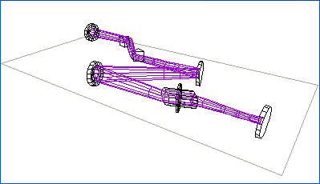

The wireframe displays the system and the laser mode in a perspective 3D view. Similarly to the Canvas window, you can control the displayed optic and mode sizes.

The coordinate system used by the wireframe renderer maps to that used by the Canvas as follows:
| Wireframe | Canvas |
| X | Y |
| Y | Out of plane |
| Z | X |
The display routines use the concept of a "camera" to display the system as it would appear if an image were captured at the specified location. The central plane of the system is formed by the plane in which the centres of all the optics and centrelines lie. When viewing the system from above the optical bench, a grey frame is drawn around the whole system.
| Property | Description |
| Mode Scale | The magnification factor for the displayed mode. For example, if the mode is 250 µm and the Mode Scale is 20, then the mode is displayed as 250 µm x 20 = 5 mm large. |
| Optics Size (mm) | The displayed diameter of the optics. |
| Look At (mm) | The coordinates in the plane of the system where the camera is pointed. |
| Camera (mm) | The coordinates in the plane of the system where the camera is located. |
| Elevation (mm) | The distance above or below the system plane at which the camera is positioned. |
| View Angle (deg) | The viewing angle of the camera lens. Small values correspond to telescope objectives, where objects appear with little perspective distortion. Large values, around 60°, give large perspective distortion similar to a wide-angle lens. |
The view in the Wireframe window can be manipulated using the tools listed in the Canvas menu and as buttons on the toolbar. The tools behave similarly as for the Canvas window.
The Wireframe Tools do not modify any system properties, only how the system is displayed in the window.
In general, the Control key acts as a tool modifier.
The Zoom tool moves the camera closer or further away from the Look At point. Dragging upwards in the window takes the camera closer. Downwards moves it further away.
With the Pan tool selected, clicking and dragging the wireframe moves camera over the system. This equivalent to a "fly-over" of the camera.
The Rotate tool allows you to rotates the view of the system.